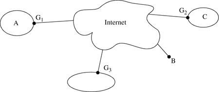

Networking Security Networking Security Networking Security Security Networking Security Networking Security Networking Charlie Kaufman Radia Perlman Mike Speciner Prentice Hall Network Security: Private Communication in a Public World, Second Edition Networking Security Networking Security Networking Security Security Networking Security Networking Security Networking Charlie Kaufman Radia Perlman Mike Speciner Prentice Hall Network Security: Private Communication in a Public World, Second Edition
23.3. Encrypted Tunnels
A tunnel is a point-to-point connection in which the actual communication occurs across a network.
Suppose the only reason you've hooked into the Internet is to connect disconnected pieces of your own network to each other. Instead of the example in Figure 23-3, you might have bought dedicated links between G1, G2, and G3, and trusted those links as part of your corporate network because you owned them. But it's likely to be cheaper to have the Gs pass data across the Internet. How can you trust your corporate data crossing over the Internet? You do this by configuring G1, G2, and G3 with security information about each other (such as cryptographic keys). All information between them is cryptographically protected. The most common protocol for encrypted tunnels is IPsec (see Chapter 17 IPsec: AH and ESP).

The mechanics of the tunnel, from the IP point of view, is that when A sends a packet to C, A will launch it with an IP header that has source=A, destination=C. When G1 sends it across the tunnel, it puts it into another envelope, i.e., it adds an additional IP header, treating the inner header as data. The outer IP header will contain source=G1 and destination=G2. And all the contents (including the inner IP header) will be encrypted and integrity protected, so it is safe to traverse the Internet. G1, G2, and G3 use the Internet like some sort of insecure wire. You might want your users to be able to access the corporate network from across the Internet as well. Suppose B is some sort of workstation that can attach to the Internet in any location. To do this, B would create a tunnel with one of the Gs. This configuration is often referred to as a VPN (virtual private network).
Another way to think about this is to consider your communication path to be a sequence of links, some of which are secure and some of which aren't. The right way to ensure secure communication is end-to-end, i.e., where the two communicating parties do all the security work and assume that the medium over which they are communicating is insecure. But the parties may not be capable of providing security, which is okay if all the links and routers in the path between them are secure. When some of the links are subject to eavesdropping, you can encrypt over those links. Only the endpoints of the tunnel need to do encryption and decryption.
|